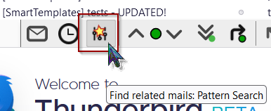
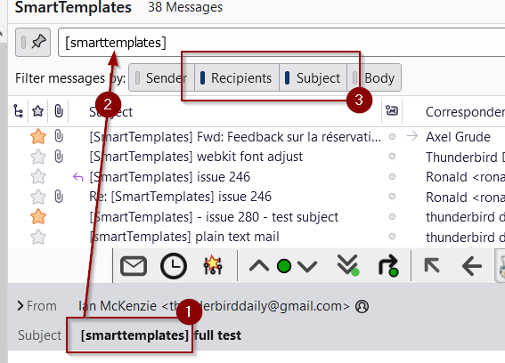
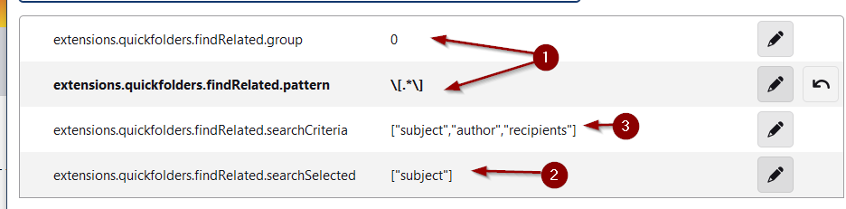
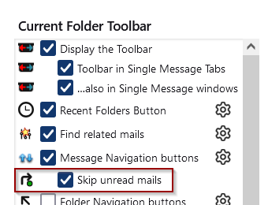

New feature: find related mails through pattern matching the currently selected mail. [issue 488]

This works via a pattern search which is applied to fields of the currently selected email via a search mask (regular expression). In this example, it extracts a term in brackets from the subject and then filters the messages according to this pattern:

The function automatically carries out 3 steps here:
1 Determine term
2 insert the term found in the search field.
3
initialize "Filter by" - selection of fields
It is currently configured via right-click:
/>
1
Search mask and regex group number (0 for entire match)
2 Where is text extracted in the highlighted email
3 How should the search be carried out.
The feature is currently experimental but I am already using it successfully for the "follow-up" of orders
Added an option to hide the 'skip unread folder' button from the Navigation Toolbar:
For up to date news on this, please see the Related bug on Thunderbird's Bugzilla